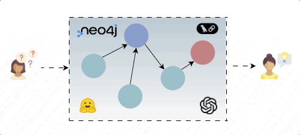

GraphRAG Tutorial: Integrating Neo4j with LLMs
This project explores the integration of Knowledge Graphs with Large Language Models (LLMs) to create a robust GraphRAG system. By combining unstructured data processing with the structured power of Neo4j and LangChain, this approach overcomes the limitations of traditional vector-only retrieval.

For all the content and code implementation, check out the project on GitHub → GitHub repository
By following this pipeline, you will learn how to convert unstructured text (such as financial books or documentation) into a structured graph database. This allows for deep connectivity between entities, reducing hallucinations and providing richer context for the LLM. For a detailed walkthrough and the accompanying article, visit the Medium post → Medium Article
In this tutorial, you'll explore the following:
- How to set up a Neo4j database using Docker and connect it to your Python environment.
- How to construct a Knowledge Graph from unstructured text by extracting entities and relationships.
- How to implement Hybrid Retrieval (Vector + Graph) and execute Cypher queries via LangChain for precise answers.
This approach demonstrates how to move beyond simple similarity search, enabling your AI applications to "reason" over data structures and answer complex questions that require understanding relationships between data points.
Front page